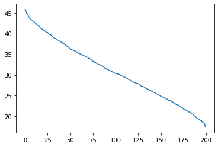

\(\newcommand{\horz}{\rule[.5ex]{2.5ex}{0.5pt}}\)
3.6. Advanced material#
We cover various advanced topics.
3.6.1. Low-rank approximation#
Now that we have defined a notion of distance between matrices, we will consider the problem of finding a good approximation to a matrix \(A\) among all matrices of rank at most \(k\). We will start with the Frobenius norm, which is easier to work with, and we will show later on that the solution is the same under the induced norm.
The solution to this problem will be familiar. In essence, we will re-interpret our solution to the best approximating subspace as a low-rank approximation.
Low-rank approximation in the Frobenius norm From the proof of the Row Rank Equals Column Rank Lemma, it follows that a rank-\(r\) matrix \(A\) can be written as a sum of \(r\) rank-\(1\) matrices
We will now consider the problem of finding a “simpler” approximation to \(A\)
where \(k < r\). Here we measure the quality of this approximation using a matrix norm.
We are ready to state our key observation. In words, the best rank-\(k\) approximation to \(A\) in Frobenius norm is obtained by projecting the rows of \(A\) onto a linear subspace of dimension \(k\). We will come back to how one finds the best such subspace below. (Hint: We have already solved this problem.)
LEMMA (Projection and Rank-\(k\) Approximation) Let \(A \in \mathbb{R}^{n \times m}\). For any matrix \(B \in \mathbb{R}^{n \times m}\) of rank \(k \leq \min\{n,m\}\),
where \(B_{\perp} \in \mathbb{R}^{n \times m}\) is the matrix of rank at most \(k\) obtained as follows. Denote row \(i\) of \(A\), \(B\) and \(B_{\perp}\) respectively by \(\boldsymbol{\alpha}_i^T\), \(\mathbf{b}_{i}^T\) and \(\mathbf{b}_{\perp,i}^T\), \(i=1,\ldots, n\). Set \(\mathbf{b}_{\perp,i}\) to be the orthogonal projection of \(\boldsymbol{\alpha}_i\) onto \(\mathcal{Z} = \mathrm{span}(\mathbf{b}_1,\ldots,\mathbf{b}_n)\).
\(\flat\)
Proof idea: The square of the Frobenius norm decomposes as a sum of squared row norms. Each term in the sum is minimized by the orthogonal projection.
Proof: By definition of the Frobenius norm, we note that
and similarly for \(\|A - B_{\perp}\|_F\). We make two observations:
Because the orthogonal projection of \(\boldsymbol{\alpha}_i\) onto \(\mathcal{Z}\) minimizes the distance to \(\mathcal{Z}\), it follows that term by term \(\|\boldsymbol{\alpha}_i - \mathbf{b}_{\perp,i}\| \leq \|\boldsymbol{\alpha}_i - \mathbf{b}_{i}\|\) so that
Moreover, because the projections satisfy \(\mathbf{b}_{\perp,i} \in \mathcal{Z}\) for all \(i\), \(\mathrm{row}(B_\perp) \subseteq \mathrm{row}(B)\) and, hence, the rank of \(B_\perp\) is at most the rank of \(B\).
That concludes the proof. \(\square\)
Recall the approximating subspace problem. That is, think of the rows \(\boldsymbol{\alpha}_i^T\) of \(A \in \mathbb{R}^{n \times m}\) as a collection of \(n\) data points in \(\mathbb{R}^m\). We are looking for a linear subspace \(\mathcal{Z}\) that minimizes
over all linear subspaces of \(\mathbb{R}^m\) of dimension at most \(k\). By the Projection and Rank-\(k\) Approximation Lemma, this problem is equivalent to finding a matrix \(B\) that minimizes
among all matrices in \(\mathbb{R}^{n \times m}\) of rank at most \(k\). Of course we have solved this problem before.
Let \(A \in \mathbb{R}^{n \times m}\) be a matrix with SVD
For \(k < r\), truncate the sum at the \(k\)-th term
The rank of \(A_k\) is exactly \(k\). Indeed, by construction,
the vectors \(\{\mathbf{u}_j\,:\,j = 1,\ldots,k\}\) are orthonormal, and
since \(\sigma_j > 0\) for \(j=1,\ldots,k\) and the vectors \(\{\mathbf{v}_j\,:\,j = 1,\ldots,k\}\) are orthonormal, \(\{\mathbf{u}_j\,:\,j = 1,\ldots,k\}\) spans the column space of \(A_k\).
We have shown before that \(A_k\) is the best approximation to \(A\) among matrices of rank at most \(k\) in Frobenius norm. Specifically, the Greedy Finds Best Fit Theorem implies that, for any matrix \(B \in \mathbb{R}^{n \times m}\) of rank at most \(k\),
This result is known as the Eckart-Young Theorem. It also holds in the induced \(2\)-norm, as we show next.
Low-rank approximation in the induced norm We show in this section that the same holds in the induced norm. First, some observations.
LEMMA (Matrix Norms and Singular Values: Truncation) Let \(A \in \mathbb{R}^{n \times m}\) be a matrix with SVD
where recall that \(\sigma_1 \geq \sigma_2 \geq \cdots \sigma_r > 0\) and let \(A_k\) be the truncation defined above. Then
and
\(\flat\)
Proof: For the first claim, by definition, summing over the columns of \(A - A_k\)
Because the \(\mathbf{u}_j\)’s are orthonormal, this is
where we used that the \(\mathbf{v}_j\)’s are also orthonormal.
For the second claim, recall that the induced norm is defined as
For any \(\mathbf{x} \in \mathbb{S}^{m-1}\)
Because the \(\sigma_j\)’s are in decreasing order, this is maximized when \(\langle \mathbf{v}_j, \mathbf{x}\rangle = 1\) if \(j=k+1\) and \(0\) otherwise. That is, we take \(\mathbf{x} = \mathbf{v}_{k+1}\) and the norm is then \(\sigma_{k+1}^2\), as claimed. \(\square\)
THEOREM (Low-Rank Approximation in the Induced Norm) Let \(A \in \mathbb{R}^{n \times m}\) be a matrix with SVD
and let \(A_k\) be the truncation defined above with \(k < r\). For any matrix \(B \in \mathbb{R}^{n \times m}\) of rank at most \(k\),
\(\flat\)
Proof idea: We know that \(\|A - A_k\|_2^2 = \sigma_{k+1}^2\). So we want to lower bound \(\|A - B\|_2^2\) by \(\sigma_{k+1}^2\). For that, we have to find an appropriate \(\mathbf{z}\) for any given \(B\) of rank at most \(k\). The idea is to take a vector \(\mathbf{z}\) in the intersection of the null space of \(B\) and the span of the singular vectors \(\mathbf{v}_1,\ldots,\mathbf{v}_{k+1}\). By the former, the squared norm of \((A - B)\mathbf{z}\) is equal to the squared norm of \(A\mathbf{z}\) which lower bounds \(\|A\|_2^2\). By the latter, \(\|A \mathbf{z}\|^2\) is at least \(\sigma_{k+1}^2\).
We previously established the following lemma.
THEOREM (Rank-Nullity) Let \(B \in \mathbb{R}^{n \times m}\) be a matrix of rank \(= k\). Then \(\mathrm{dim}(\mathrm{null}(B)) = m - k\). Put differently,
\(\sharp\)
Proof: By the Rank-Nullity Theorem, the dimension of \(\mathrm{null}(B)\) is at least \(m-k\) so by Exercise 3.20 there is a unit vector \(\mathbf{z}\) in the intersection
Then \((A-B)\mathbf{z} = A\mathbf{z}\) since \(\mathbf{z} \in \mathrm{null}(B)\). Also since \(\mathbf{z} \in \mathrm{span}(\mathbf{v}_1,\ldots,\mathbf{v}_{k+1})\), and therefore orthogonal to \(\mathbf{v}_{k+2},\ldots,\mathbf{v}_r\), we have
By the Matrix Norms and Singular Values Lemma, \(\sigma_{k+1}^2 = \|A - A_k\|_2\) and we are done. \(\square\)
3.6.2. Why project?#
We return to \(k\)-means clustering and why projecting to a lower-dimensional subspace can produce better results. We prove a simple inequality that provides some insight. Quoting [BHK, Section 7.5.1]:
[…] let’s understand the central advantage of doing the projection to [the top \(k\) right singular vectors]. It is simply that for any reasonable (unknown) clustering of data points, the projection brings data points closer to their cluster centers.
To elaborate, suppose we have \(n\) data points in \(d\) dimensions in the form of the rows \(\mathbf{a}_i^T\), \(i=1\ldots, n\), of matrix \(A \in \mathbb{A}^{n \times d}\), where we assume that \(n > d\) and that \(A\) has full column rank. Imagine these data points come from an unknown ground-truth \(k\)-clustering assignment \(g(i) \in [k]\), \(i = 1,\ldots, n\), with corresponding unknown centers \(\mathbf{c}_j\), \(j = 1,\ldots, k\), for \(g(i) = j\). Let \(C \in \mathbb{R}^{n \times d}\) be the corresponding matrix, that is, row \(i\) of \(C\) is \(\mathbf{c}_j^T\) if \(g(i) = j\). The \(k\)-means objective of the true clustering is then
The matrix \(A\) has an SVD
and for \(k < r\) we have the truncation
It corresponds to projecting each row of \(A\) onto the linear subspace spanned by the first \(k\) right singular vectors \(\mathbf{v}_1, \ldots, \mathbf{v}_k\). To see this, note that the \(i\)-th row of \(A\) is \(\boldsymbol{\alpha}_i^T = \sum_{j=1}^r \sigma_j u_{j,i} \mathbf{v}_j^T\) and that, because the \(\mathbf{v}_j\)’s are linearly independent and in particular \(\mathbf{v}_1,\ldots,\mathbf{v}_k\) is an orthonormal basis of its span, the projection of \(\boldsymbol{\alpha}_i\) onto \(\mathrm{span}(\mathbf{v}_1,\ldots,\mathbf{v}_k)\) is
which is the \(i\)-th row of \(A_k\). The \(k\)-means objective of \(A_k\) with respect to the ground-truth centers \(\mathbf{c}_j\), \(j=1,\ldots,k\), is \(\|A_k - C\|_F^2\).
One more observation: the rank of \(C\) is at most \(k\). Indeed, there are \(k\) different rows in \(C\) so its row rank is \(k\) if these different rows are linearly independent and less than \(k\) otherwise.
THEOREM (Why Project) Let \(A \in \mathbb{A}^{n \times d}\) be a matrix and let \(A_k\) be the truncation above. For any matrix \(C \in \mathbb{R}^{n \times d}\) of rank \(\leq k\),
\(\sharp\)
The content of this inequality is the following. The quantity \(\|A_k - C\|_F^2\) is the \(k\)-means objective of the projection \(A_k\) with respect to the true centers, that is, the sum of the squared distances to the centers. By the Matrix Norms and Singular Values Lemma, the inequality above gives that
where \(\sigma_j(A - C)\) is the \(j\)-th singular value of \(A - C\). On the other hand, by the same lemma, the \(k\)-means objective of the un-projected data is
If the rank of \(A-C\) is much larger than \(k\) and the singular values of \(A-C\) decay slowly, then the latter quantity may be much larger. In other words, projecting may bring the data points closer to their true centers, potentially making it easier to cluster them.
Proof: (Why Project) We have shown previously that, for any matrices \(A, B \in \mathbb{R}^{n \times m}\), the rank of their sum is less or equal than the sum of their ranks, that is,
So the rank of the difference \(A_k - C\) is at most the sum of the ranks
where we used that the rank of \(A_k\) is \(k\) and the rank of \(C\) is \(\leq k\) since it has \(k\) distinct rows. By the Matrix Norms and Singular Values Lemma,
By the triangle inequality for matrix norms,
By the Low-Rank Approximation in the Induced Norm Theorem,
since \(C\) has rank at most \(k\). Putting these three inequalities together,
\(\square\)
NUMERICAL CORNER: We return to our example with the two Gaussian clusters.
d, n, w = 1000, 100, 3.
X1, X2 = mmids.two_clusters(d, n, w)
X = np.concatenate((X1, X2), axis=0)
In reality, we cannot compute the matrix norms of \(X-C\) and \(X_k-C\) as the true centers are not known. But, because this is simulated data, we happen to know the truth and we can check the validity of our results in this case. The centers are:
C1 = np.stack([np.concatenate(([-w], np.zeros(d-1))) for _ in range(n)])
C2 = np.stack([np.concatenate(([w], np.zeros(d-1))) for _ in range(n)])
C = np.concatenate((C1, C2), axis=0)
We use numpy.linalg.svd function to compute the norms from the formulas in the Matrix Norms and Singular Values Lemma. First, we observe that the singular values of \(X-C\) are decaying slowly.
uc, sc, vhc = LA.svd(X-C)
plt.plot(sc)
plt.show()

The \(k\)-means objective with respect to the true centers under the full-dimensional data is:
frob = np.sum(sc**2)
print(frob)
200925.6690681811
while the square of the top singular value of \(X-C\) is only:
top_sval_sq = sc[0]**2
print(top_sval_sq)
2095.357155856165
Finally, we compute the \(k\)-means objective with respect to the true centers under the projected one-dimensional data:
u, s, vh = LA.svd(X)
frob_proj = np.sum((s[0] * np.outer(u[:,0],vh[:,0]) - C)**2)
print(frob_proj)
1525.437425631981
\(\unlhd\)
3.6.3. Additional proofs#
In this section, we give several proofs that were left out in this chapter.
Proof of Spectral Theorem We start with a proof that distinct eigenvalues correspond to linearly independent eigenvectors.
Proof: (Number of Eigenvalues) Assume by contradiction that \(\mathbf{x}_1, \ldots, \mathbf{x}_m\) are linearly dependent. By the Linear Dependence Lemma, there is \(k \leq m\) such that
where \(\mathbf{x}_1, \ldots, \mathbf{x}_{k-1}\) are linearly independent. In particular, there are \(a_1, \ldots, a_{k-1}\) such that
Transform the equation above in two ways: (1) multiply both sides by \(\lambda_k\) and (2) apply \(A\). Then subtract the resulting equations. That leads to
Because the \(\lambda_i\)’s are distinct and \(\mathbf{x}_1, \ldots, \mathbf{x}_{k-1}\) are linearly independent, we must have \(a_1 = \cdots = a_{k-1} = 0\). But that implies that \(\mathbf{x}_k = \mathbf{0}\), a contradiction.
For the second claim, if there were more than \(d\) distinct eigenvalues, then there would be more than \(d\) corresponding linearly independent eigenvectors by the first claim, a contradiction. \(\square\)
One might hope that the SVD of a symmetric matrix generates identical left and right singular vectors, thereby producing candidates for the sought eigenvectors. However that is not the case.
EXAMPLE: It can be shown that an SVD of \(A = (-1)\) is \(A = (1)\,(1)\,(-1)\). That is, \(\mathbf{u}_1 = (1)\) and \(\mathbf{v} = (-1)\). \(\lhd\)
However, the same roadmap that led to the SVD can be made to produce a spectral decomposition.
We will need the following block matrix formula. Suppose
where \(A_{11} \in \mathbb{R}^{n_1\times p}\), \(A_{21} \in \mathbb{R}^{n_2\times p}\), \(B_{11} \in \mathbb{R}^{p\times n_1}\), \(B_{12} \in \mathbb{R}^{p\times n_2}\), then
Indeed this is just a special case of the \(2 \times 2\) block matrix product formula we have encountered previously, with empty blocks \(A_{12}, A_{22}, B_{21}, B_{22}\).
Proof idea (Spectral Theorem): Similarly to how we used Householder transformations to “add zeros under the diagonal”, here we will use a sequence of orthogonal transformations to add zeros both below and above the diagonal. Specifically, we construct a sequence of orthogonal matrices \(\hat{W}_1,\ldots, \hat{W}_d\) such that
is diagonal. Then the matrix \(Q\) is simply \(W_1 W_2 \cdots W_d\) (check it!).
To define these matrices, we use a greedy sequence maximizing the quadratic form \(\langle \mathbf{v}, A \mathbf{v}\rangle\). How is this quadratic form related to eigenvalues? Note that, for a unit eigenvector \(\mathbf{v}\) with eigenvalue \(\lambda\), we have \(\langle \mathbf{v}, A \mathbf{v}\rangle = \langle \mathbf{v}, \lambda \mathbf{v}\rangle = \lambda\).
Proof: (Spectral Theorem) We proceed by induction.
A first eigenvector: Let \(A_1 = A\). Define
which exists by the Extreme Value Theorem, and further define
Complete \(\mathbf{v}_1\) into an orthonormal basis of \(\mathbb{R}^d\), \(\mathbf{v}_1\), \(\hat{\mathbf{v}}_2, \ldots, \hat{\mathbf{v}}_d\) (see Exercise 2.20), and form the block matrix
where the columns of \(\hat{V}_1\) are \(\hat{\mathbf{v}}_2, \ldots, \hat{\mathbf{v}}_d\). Note that \(\hat{W}_1\) is orthogonal by construction.
Getting one step closer to diagonalization: We show next that \(W_1\) gets us one step closer to a diagonal matrix by similarity transformation. Note first that
where \(\mathbf{w}_1 = \hat{V}_1^T A_1 \mathbf{v}_1\) and \(A_2 = \hat{V}_1^T A_1 \hat{V}_1\).
The key claim is that \(\mathbf{w}_1 = \mathbf{0}\). This follows from a contradiction argument. Indeed, suppose \(\mathbf{w}_1 \neq \mathbf{0}\) and consider the unit vector (Exercise 3.65 asks for a proof that \(\|\mathbf{z}\| = 1\))
which, by the formula in Exercise 2.52, achieves the objective value
By the sum of a geometric series, for \(\varepsilon \in (0,1)\),
So, for \(\delta > 0\) small enough,
where \(C \in \mathbb{R}\) depends on \(\mathbf{w}_1\) and \(A_2\), and where we ignored the “higher-order” terms involving \(\delta^3, \delta^4, \delta^5, \ldots\) which are negligible. That gives the desired contradiction - that is, it would imply the existence of a vector achieving a stricter better objective value than the optimal \(\mathbf{v}_1\). (See Exercise 3.65 for a more formal derivation.)
So, letting \(W_1 = \hat{W}_1\),
Finally note that \(A_2 = \hat{V}_1^T A_1 \hat{V}_1\) is symmetric
by the symmetry of \(A_1\) itself.
Next step of the induction: Apply the same argument to the symmetric matrix \(A_2 \in \mathbb{R}^{(d-1)\times (d-1)}\), let \(\hat{W}_2 = (\mathbf{v}_2\ \hat{V}_2) \in \mathbb{R}^{(d-1)\times (d-1)}\) be the corresponding orthogonal matrix, and define \(\lambda_2\) and \(A_3\) through the equation
Now define the block matrix
Observe that (check it!)
Proceeding similarly by induction gives the claim. \(\square\)
Remarks: A couple remarks about the proof:
The fact that \(\mathbf{w}_1 \neq \mathbf{0}\) is perhaps more intuitively understood through vector calculus by using the method of Lagrangian multipliers on \(\max\{\langle \mathbf{v}, A_1 \mathbf{v}\rangle:\|\mathbf{v}\| = 1\}\) to see that \(A_1 \mathbf{v}_1\) must be proportional to \(\mathbf{v}_1\). Hence \(\mathbf{w}_1 = \hat{V}_1^T A_1 \mathbf{v}_1 = \mathbf{0}\) by construction of \(\hat{V}_1^T\). Making this argument rigorous is beyond this course.
By construction, the vector \(\mathbf{v}_2\) (i.e., the first column of \(\hat{W}_2\)) is the solution to
Note that, by definition of \(A_2\) (and the fact that \(A_1 = A\)),
So we can think of the solution \(\mathbf{v}_2\) as specifying an optimal linear combination of the columns of \(\hat{V}_1\) - which form a basis of the space \(\mathrm{span}(\mathbf{v}_1)^\perp\) of vectors orthogonal to \(\mathbf{v}_1\). In essence \(\mathbf{v}_2\) solves the same problem as \(\mathbf{v}_1\), but restricted to \(\mathrm{span}(\mathbf{v}_1)^\perp\). We will come back to this below.
Proof of Greedy Finds Best Subspace In this section, we prove the Greedy Finds Best Subspace Theorem.
Proof idea: We proceed by induction. For an arbitrary orthonormal list \(\mathbf{w}_1,\ldots,\mathbf{w}_k\), we find an orthonormal basis of their span containing an element orthogonal to \(\mathbf{v}_1,\ldots,\mathbf{v}_{k-1}\). Then we use the defintion of \(\mathbf{v}_k\) to conclude.
Proof: As we explained in the previous subsection, we reformulate the problem as a maximization
where we also replace the \(k\)-dimensional linear subspace \(\mathcal{Z}\) with an arbitrary orthonormal basis \(\{\mathbf{w}_1,\ldots,\mathbf{w}_k\}\).
We then proceed by induction. For \(k=1\), we define \(\mathbf{v}_1\) as a solution of the above maximization problem. Assume that, for any orthonormal list \(\{\mathbf{w}_1,\ldots,\mathbf{w}_\ell\}\) with \(\ell < k\), we have
Now consider any orthonormal list \(\{\mathbf{w}_1,\ldots,\mathbf{w}_k\}\) and let its span be \(\mathcal{W} = \mathrm{span}(\mathbf{w}_1,\ldots,\mathbf{w}_k)\).
Step 1: For \(j=1,\ldots,k-1\), let \(\mathbf{v}_j'\) be the orthogonal projection of \(\mathbf{v}_j\) onto \(\mathcal{W}\) and let \(\mathcal{V}' = \mathrm{span}(\mathbf{v}'_1,\ldots,\mathbf{v}'_{k-1})\). Because \(\mathcal{V}' \subseteq \mathcal{W}\) has dimension at most \(k-1\) while \(\mathcal{W}\) itself has dimension \(k\), by Exercises 2.33 and 2.34 we can find an orthonormal basis \(\mathbf{w}'_1,\ldots,\mathbf{w}'_{k}\) of \(\mathcal{W}\) such that \(\mathbf{w}'_k\) is orthogonal to \(\mathcal{V}'\). Then, for any \(j=1,\ldots,k-1\), we have the decomposition \(\mathbf{v}_j = \mathbf{v}'_j + (\mathbf{v}_j - \mathbf{v}'_j)\) where \(\mathbf{v}'_j \in \mathcal{V}'\) is orthogonal to \(\mathbf{w}'_k\) and \(\mathbf{v}_j - \mathbf{v}'_j\) is also orthogonal to \(\mathbf{w}'_k \in \mathcal{W}\) by the properties of the orthogonal projection onto \(\mathcal{W}\). Hence
for any \(\beta_j\)’s. That is, \(\mathbf{w}'_k\) is orthogonal to \(\mathrm{span}(\mathbf{v}_1,\ldots,\mathbf{v}_{k-1})\).
Step 2: By the induction hypothesis, we have
Moreover, recalling that the \(\boldsymbol{\alpha}_i^T\)’s are the rows of \(A\),
since the \(\mathbf{w}_j\)’s and \(\mathbf{w}'_j\)’s form an orthonormal basis of the same subspace \(\mathcal{W}\). Since \(\mathbf{w}'_k\) is orthogonal to \(\mathrm{span}(\mathbf{v}_1,\ldots,\mathbf{v}_{k-1})\) by the conclusion of Step 1, by the definition of \(\mathbf{v}_k\) as a solution to
we have
Step 3: Putting everything together
which proves the claim. \(\square\)
Proof of Existence of the SVD We return to the proof of the Existence of SVD Theorem. Recall the construction of left and right singular vectors detailed above. All that is left to prove is the orthogonality of the \(\mathbf{u}_j\)’s.
LEMMA (Left Singular Vectors are Orthogonal) For all \(1 \leq i \neq j \leq r\), \(\langle \mathbf{u}_i, \mathbf{u}_j \rangle = 0\). \(\flat\)
Proof idea: Quoting [BHK, Section 3.6]:
Intuitively if \(\mathbf{u}_i\) and \(\mathbf{u}_j\), \(i < j\), were not orthogonal, one would suspect that the right singular vector \(\mathbf{v}_j\) had a component of \(\mathbf{v}_i\) which would contradict that \(\mathbf{v}_i\) and \(\mathbf{v}_j\) were orthogonal. Let \(i\) be the smallest integer such that \(\mathbf{u}_i\) is not orthogonal to all other \(\mathbf{u}_j\). Then to prove that \(\mathbf{u}_i\) and \(\mathbf{u}_j\) are orthogonal, we add a small component of \(\mathbf{v}_j\) to \(\mathbf{v}_i\), normalize the result to be a unit vector \(\mathbf{v}'_i \propto \mathbf{v}_i + \varepsilon \mathbf{v}_j\) and show that \(\|A \mathbf{v}'_i\| > \|A \mathbf{v}_i\|\), a contradiction.
Proof: We argue by contradiction. Let \(i\) be the smallest index such that there is a \(j > i\) with \(\langle \mathbf{u}_i, \mathbf{u}_j \rangle = \delta \neq 0\). Assume \(\delta > 0\) (otherwise use \(-\mathbf{u}_i\)). For \(\varepsilon \in (0,1)\), because the \(\mathbf{v}_k\)’s are orthonormal, \(\|\mathbf{v}_i + \varepsilon \mathbf{v}_j\|^2 = 1+\varepsilon^2\). Consider the vectors
Observe that \(\mathbf{v}'_i\) is orthogonal to \(\mathbf{v}_1,\ldots,\mathbf{v}_{i-1}\), so that
On the other hand, by the Orthogonal Decomposition Lemma, we can write \(A \mathbf{v}_i'\) as a sum of its orthogonal projection on the unit vector \(\mathbf{u}_i\) and \(A \mathbf{v}_i' - \mathrm{proj}_{\mathbf{u}_i}(A \mathbf{v}_i')\), which is orthogonal to \(\mathbf{u}_i\). In particular, by Pythagoras, \(\|A \mathbf{v}_i'\| \geq \|\mathrm{proj}_{\mathbf{u}_i}(A \mathbf{v}_i')\|\). But that implies, for \(\varepsilon \in (0,1)\),
where the second inequality follows from a Taylor expansion or the observation
Now note that
for \(\varepsilon\) small enough, contradicting the inequality above. \(\square\)